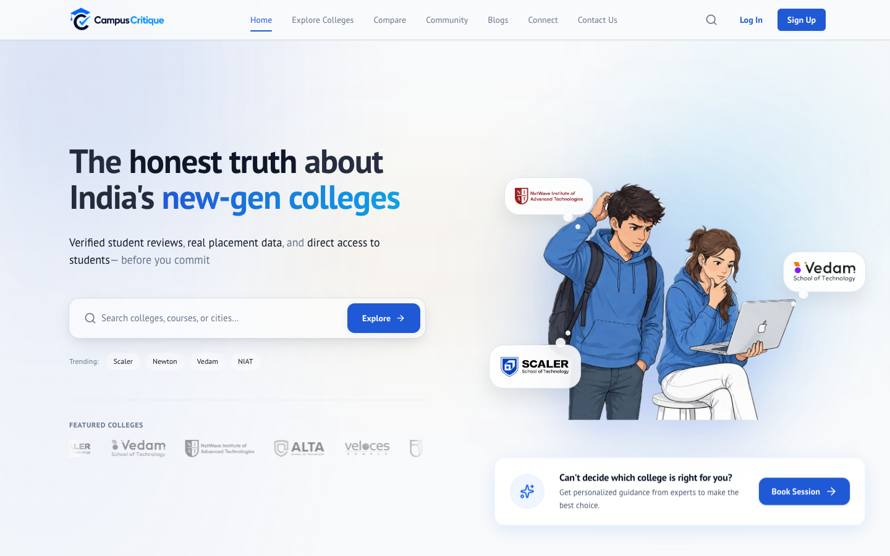
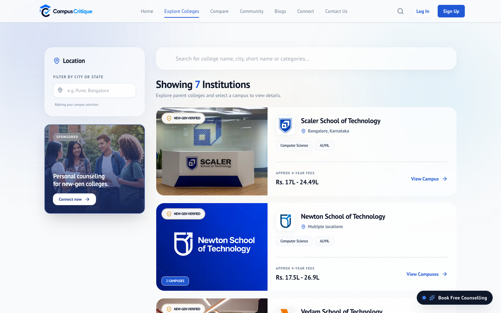
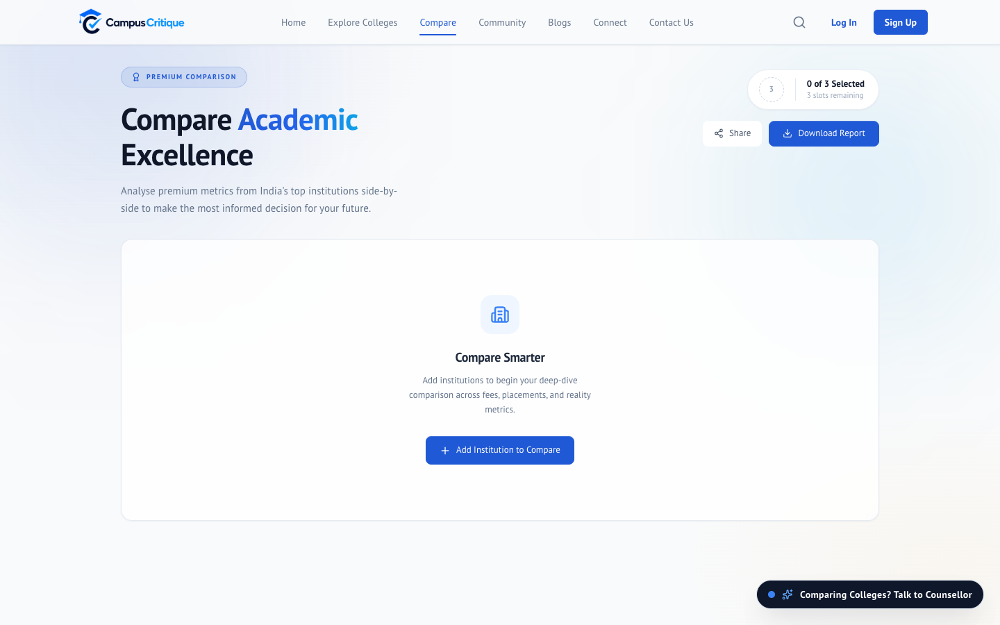

Work · 01
CampusCritique
College discovery platform I co-founded. Verified reviews, real placement data, side-by-side compare, and paid mentorship sessions.



Measured
| Metric | Value | Window | Source |
|---|---|---|---|
| Unique visitors, since launch | 1,300+ | May to Sep 2026 | Vercel Analytics, CampusCritique project |
| Sign-ups, verified accounts | 80+ | since launch | Supabase auth.users count |
| Institutions listed, with structured data | 8 | current | colleges table |
| Organic search share, of sessions | 53% | lifetime | Vercel Analytics referrers |
Problem
Picking a new-generation Indian college is a four-year, multi-lakh decision made on brochures and WhatsApp forwards. Most students never get to ask the real questions the official material never answers.
The gap is honest, comparable information: what the college is actually like, real placement numbers, and someone who has been there to talk to before you commit.
What I built
The full product end-to-end in Next.js on Supabase: authentication, verified review submission and moderation workflow, side-by-side college comparison tool, community Q&A, anonymous reviews, and the Connect mentorship booking flow where students pay for one-to-one sessions with verified seniors.
On the product side I own positioning, the college onboarding pipeline, partnerships with Scaler, Newton, Vedam, NIAT, Alta, Veloces, and Intellipaat, and the brand identity.
Result
1,300+ unique visitors and 80+ sign-ups since the May 2026 launch, with 53% of sessions arriving from organic search. Eight institutions are listed with structured data across 6 comparison dimensions. Connect has completed paid sessions with zero refunds needed.
Learned: Distribution beats features. The referrals from the channel did more for sign-ups than any page we shipped.